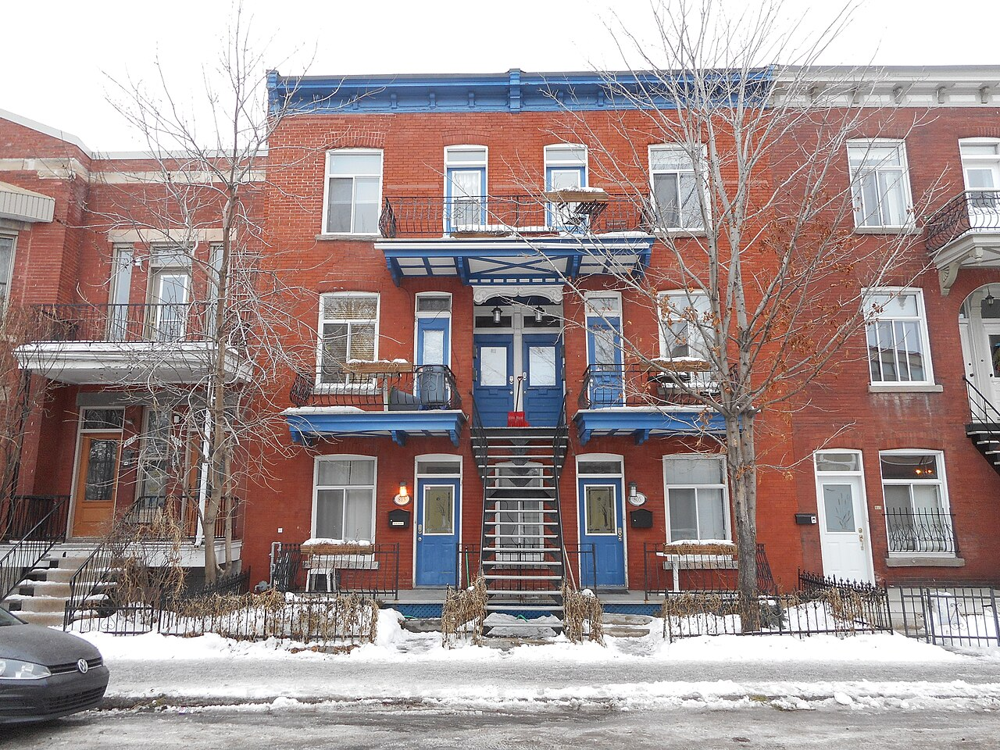
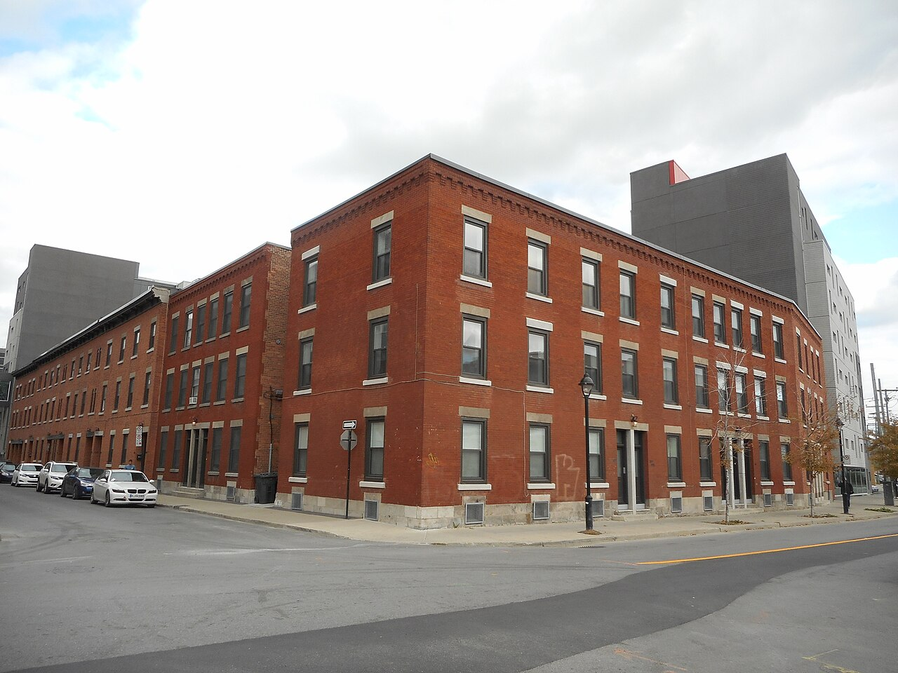

Multiplex Le multiplex

805-815 rue du Couvent, Saint-Henri — the multiplex in its symmetrical three-bay mode: a central bay of doors and balconies, flanking bays of windows, and one slightly curved exterior stair serving the pair of doors on the first floor. Photograph by Jeangagnon, 24 January 2015, Wikimedia Commons, CC BY-SA 3.0, from Category:Multiplexes (buildings). https://commons.wikimedia.org/wiki/File:805-815,_rue_du_Couvent.jpg — licence, author and file URL read through the Commons API before download.

375-399 rue de la Montagne at rue Barré, Griffintown — four six-plex built about 1920, per the Ville de Montréal description quoted on the file page: « Cet ensemble de bâtiment est formé de 4 six-plex ». Three storeys, brick, flat roof, but built to the street line rather than behind the setback the study calls general for the type. Photograph by Jeangagnon, 6 October 2015, Wikimedia Commons, CC BY-SA 3.0, from Category:Multiplexes (buildings). https://commons.wikimedia.org/wiki/File:375-399,_rue_de_la_Montagne.jpg — licence, author and file URL read through the Commons API before download.
The top of the plex family: three storeys, two dwellings per floor, and — the detail that matters — one shared access for the two dwellings on the top floor. The study calls it a derivation of the triplex with exterior stair, « la transformation typologique du triplex afin de répondre au processus de densification du tissu urbain », built on wider lots from the First World War on.
This is where the plex family ends and the apartment building begins. The multiplex still gives most dwellings their own front door but concedes a shared one at the top; the maison d'appartements (3.1) concedes the whole stair; the immeuble d'appartements (3.3) concedes a common hall serving six to twelve. Read the four records in order and the boundary the canonical layer draws between plex-family and apartment-house-common-hall is the study's own.
| Tenure / plan | walk-up |
|---|---|
| Storeys | 3 |
| Roof form | flat |
| Roof pitch | – |
| Window proportion | vertical-2to1 |
| Principal cladding | clay-brick, stone-rusticated |
| Roofing | – |
| Garage | none |
| Lot width | – |
| Front setback | 3.25 m |
| Side setback | 0 m |
| Front yard green | – |
What Patri-Arch says about this type
- Le multiplex est un bâtiment de trois étages généralement implanté avec une marge de recul avant et sans marge latérale. Il se caractérise par la présence de deux logements par étage et la présence d’un accès commun pour les deux logements de l’étage supérieur.
- Le multiplex est une dérivation du triplex avec escalier extérieur. Il constitue la transformation typologique du triplex afin de répondre au processus de densification du tissu urbain. Il a généralement été construit dans un tissu urbain avec ruelle, donc de façon similaire au triplex, mais sur des parcelles plus larges. Ce type de bâtiment a surtout été construit à partir de la Première Guerre mondiale jusqu’à la fin de la période création des infrastructures municipales (1875-1945).
- Contiguous, front margin 2 to 4.5 m; the alignment of façades is regular where the multiplexes are built in series.
- A low metal — sometimes wood — fence characterises the outdoor treatment.
- Generally built in a fabric with a ruelle, like the triplex, but on wider lots. Mostly from the First World War to the end of the 1875–1945 period.
- Le multiplex est implanté de façon contiguë. La marge de recul avant varie de 2 à 4,5 mètres. L’alignement des façades est régulier si les multiplex sont construits en série. L’aménagement extérieur est caractérisé par la présence d’une clôture basse en métal ou parfois en bois.
- A simple rectangular body with no projections, generally with a rear extension whose position reverses from one building to the next so as to maximise sunlight in the yards.
- Three storeys, ground floor raised two to three risers, flat roof.
- Two dwellings per floor, and a shared access for the two dwellings on the top floor.
- Le corps de bâti est de forme rectangulaire simple et sans saillie. On remarque généralement la présence d’une rallonge arrière. La disposition de celle-ci est inversée d’un bâtiment à l’autre de manière à maximiser l’ensoleillement des cours. La hauteur est de trois étages avec une surélévation du rez-dechaussée par rapport au niveau du sol de deux à trois contremarches. Le toit est plat. On retrouve un balcon sur tous les niveaux au-dessus de l’entrée du rez-de-chaussée. Un escalier extérieur mène au premier étage.
- The socle is one or two courses of stone, or an exposed concrete foundation.
- The crowning is underlined by a moulded metal cornice, a stone cornice or a parapet.
- Socle — Le socle se distingue par la présence de un ou deux rangs de pierres ou d’une fondation apparente en béton.
- Corps — La composition des façades est symétrique. Les portes d’entrées et les balcons sont disposés dans l’alignement central de la façade. On retrouve deux alignements latéraux formés de fenêtres. La présence des portes au premier étage est parfois soulignée par un porche d’entrée en alcôve.
- Couronnement — Le couronnement du bâtiment est souligné par la présence d’une corniche moulurée en métal, d’une corniche en brique ou d’un parapet à fronton.
- Sash or casement, generally one width to half a height.
- Doors plain with a transom; the doors to the upper dwellings are often paired.
- Lintels expressed as a cut-stone band or soldier-course brick.
- Les fenêtres à guillotine ou à battants avec ou sans imposte sont dominantes. Les proportions de ces fenêtres sont équivalentes à 1 largeur = ½ hauteur.
- Les portes sont simples avec imposte. Les portes sont généralement jumelées sauf au dernier étage où elles sont simples.
- Les linteaux des ouvertures sont droits en pierre, en brique ou en béton ou constitués d’une platebande en brique en forme d’arc surbaissé.
- Concrete or rusticated stone at the socle.
- Brick dominant.
- Balconies and stair treads in wood; guards in metal.
- Le socle est en béton ou revêtu de pierres à bossages.
- La brique est le matériau de revêtement dominant.
- Les balcons et les marches des escaliers sont en bois et les garde-corps sont en métal.
The exterior stair — why it is outside
Same word elsewhere
- Multiplex (Le Plateau-Mont-Royal (borough of Montréal))
Same form elsewhere
- Flat-roofed house (Lévis)
- Three-storey workers' plex (Mercier–Hochelaga-Maisonneuve (borough of Montréal))
- Plex — superposed dwellings (Québec City)
- Triplex with exterior stair (Rosemont–La Petite-Patrie (borough of Montréal))
- Duplex with exterior stair (Rosemont–La Petite-Patrie (borough of Montréal))
- Duplex with interior stair and paired entrances (Rosemont–La Petite-Patrie (borough of Montréal))
- Semi-detached duplex with rear garage, Art déco manner (Rosemont–La Petite-Patrie (borough of Montréal))
- Duplex with interior stair (Le Sud-Ouest (Montréal))
- Three-storey duplex (Le Sud-Ouest (Montréal))
- Triplex with interior stair (Le Sud-Ouest (Montréal))
- Duplex with exterior stair (Le Sud-Ouest (Montréal))
- Raised duplex (Le Sud-Ouest (Montréal))
- Triplex with exterior stair (Le Sud-Ouest (Montréal))
- Immeuble à logements — the plex of superposed flats (Trois-Rivières)
- Two semi-detached duplexes, or a three-dwelling building, with deep front balconies (Verdun (borough of Montréal))
- Row duplex of the 1950s (Verdun (borough of Montréal))
- Plex of the early 20th century (Villeray–Saint-Michel–Parc-Extension)
- Plex of the mid-20th century (Villeray–Saint-Michel–Parc-Extension)
- Plex of the second half of the 20th century — the « plex italien » (Villeray–Saint-Michel–Parc-Extension)
Same period elsewhere
- Family A company houses (models A1–A8) (Arvida (borough of Jonquière, Saguenay))
- Family B company houses (models B1–B4) (Arvida (borough of Jonquière, Saguenay))
- Family C company houses (models C1–C6) (Arvida (borough of Jonquière, Saguenay))
- Family D company houses (models D1–D5) (Arvida (borough of Jonquière, Saguenay))
- Family M houses (models M1–M11), regionalist neo-vernacular (Arvida (borough of Jonquière, Saguenay))
- Family F semi-detached houses (models F1–F18) (Arvida (borough of Jonquière, Saguenay))
- Families P, Q, S and T (paired and single models along boulevard du Saguenay and rues Powell, Neilson, Berthier, Parks, Joule) (Arvida (borough of Jonquière, Saguenay))
- Family R row houses (models R2–R4) (Arvida (borough of Jonquière, Saguenay))
- Families E, G, H, J, K, L, N, Y and Z (Arvida (borough of Jonquière, Saguenay))
- Wartime Housing Ltd. houses (Arvida (borough of Jonquière, Saguenay))
- Postwar bungalow (Baie-D'Urfé)
- Mansard house (Charlesbourg (Trait-Carré))
- Boomtown building (Charlesbourg (Trait-Carré))
- Cubic house (Four Square) (Charlesbourg (Trait-Carré))
- Industrial vernacular house (Charlesbourg (Trait-Carré))
- Vernacular cottage (Charlesbourg (Trait-Carré))
- Post-war residence (bungalow) (Charlesbourg (Trait-Carré))
- English summer villa on the lake shore (Dorval)
- Postwar bungalow (Dorval)
- Mixed-use building with a flat roof (édifice mixte à toit plat) (Gatineau)
- First-generation North American bungalow (bungalow nord-américain de première génération) (Gatineau)
- Side-gable duplex (duplex à mur pignon latéral) (Gatineau)
- Central-gable house (maison à pignon central) (Gatineau)
- Complex gabled-roof house (maison à toit complexe à pignon) (Gatineau)
- Mansard-roofed house with gable wall on the façade (maison à toit mansardé avec mur pignon en façade) (Gatineau)
- One-and-a-half-storey wooden matchstick house (maison allumette en bois d'un étage et demi) (Gatineau)
- Wood matchstick house of two to two and a half storeys (maison allumette en bois de deux à deux étages et demi) (Gatineau)
- Brick matchbox house, two to two and a half storeys (maison allumette en brique de deux à deux étages et demi) (Gatineau)
- Cubic house (maison cubique) (Gatineau)
- CIP executive's house (maison de cadre de la CIP) (Gatineau)
- Flat-roofed wood house (maison en bois à toit plat) (Gatineau)
- Flat-roofed brick house (maison en brique à toit plat) (Gatineau)
- L-plan house with a two-slope (gable) roof (maison avec plan en L à toit à deux versants) (Gatineau)
- English-revival stone house (Hampstead)
- Postwar detached house (Hampstead)
- Regency cottage (Île d'Orléans)
- Second Empire style and the mansard house (Île d'Orléans)
- Victorian eclecticism (Île d'Orléans)
- American vernacular cottage (Île d'Orléans)
- Arts and Crafts architecture (Île d'Orléans)
- Boomtown house (Île d'Orléans)
- Cubic house (Four Square) (Île d'Orléans)
- Modernism (Île d'Orléans)
- Québec regionalism (Île d'Orléans)
- Postwar bungalow (Lachine (borough of Montréal))
- Bourgeois brick house in the Victorian taste (Lachine (borough of Montréal))
- Brick duplex and triplex, detached or in continuous alignment (Lachine (borough of Montréal))
- Small one-storey brick house, wider than deep, with a crown (Lachine (borough of Montréal))
- The maison « Gameroff » — contractor-built house of the 1950s–1970s quarters (Lachine (borough of Montréal))
- Second Empire house (Lévis)
- Victorian house (Lévis)
- American vernacular house (Lévis)
- Mixed-use or commercial building (Lévis)
- Beaux-Arts house (Lévis)
- Boomtown house (Lévis)
- Cubic house (maison cubique) (Lévis)
- Flat-roofed house (Lévis)
- Arts & Crafts house (Arts & métiers) (Lévis)
- Wartime housing dwelling (Lévis)
- Modernist building (Lévis)
- Bourgeois residence of the cité, Beaux-Arts (Mercier–Hochelaga-Maisonneuve (borough of Montréal))
- Shop-and-dwellings block on the commercial artery (Mercier–Hochelaga-Maisonneuve (borough of Montréal))
- Three-storey workers' plex (Mercier–Hochelaga-Maisonneuve (borough of Montréal))
- Brick bungalow of the 1950s Mercier developments (Mercier–Hochelaga-Maisonneuve (borough of Montréal))
- Veterans' house, to the Wartime Housing Limited model (Mercier–Hochelaga-Maisonneuve (borough of Montréal))
- Garden City House (Town of Mount Royal)
- Faubourg House (Town of Mount Royal)
- Faubourg Apartment Block (Town of Mount Royal)
- Canadian House (Town of Mount Royal)
- New England House (Town of Mount Royal)
- New England Apartment Block (Town of Mount Royal)
- Georgian House (Town of Mount Royal)
- English Manor House (Town of Mount Royal)
- Bungalow (Town of Mount Royal)
- Cottage (Town of Mount Royal)
- Split-Level (Town of Mount Royal)
- Prairie House (Town of Mount Royal)
- Modern Apartment Block (Town of Mount Royal)
- Semi-detached single-family house (Outremont (borough of Montréal))
- Semi-detached duplex (Outremont (borough of Montréal))
- Detached single-family house (Outremont (borough of Montréal))
- Opulent detached residence (Outremont (borough of Montréal))
- Apartment building (conciergerie) (Outremont (borough of Montréal))
- Modern house on the flank (Outremont (borough of Montréal))
- Duplex without front setback (Le Plateau-Mont-Royal (borough of Montréal))
- Duplex with front setback (Le Plateau-Mont-Royal (borough of Montréal))
- Duplex with exterior stair (Le Plateau-Mont-Royal (borough of Montréal))
- Triplex with interior stair (Le Plateau-Mont-Royal (borough of Montréal))
- Triplex with exterior stair (Le Plateau-Mont-Royal (borough of Montréal))
- Multiplex (Le Plateau-Mont-Royal (borough of Montréal))
- Row urban house (Le Plateau-Mont-Royal (borough of Montréal))
- Apartment block without courtyard (Le Plateau-Mont-Royal (borough of Montréal))
- Apartment block with courtyard (Le Plateau-Mont-Royal (borough of Montréal))
- Small apartment building (Le Plateau-Mont-Royal (borough of Montréal))
- Postwar bungalow (Pointe-Claire)
- Cubique — massive symmetrical block, imposing gallery, low hipped roof (Pointe-Claire)
- Village Boomtown house, two storeys, flat or low-pitch roof behind a crown (Pointe-Claire)
- Veterans' house on the Wartime Housing Limited model, c. 1947 (Pointe-Claire)
- Mansard-roofed house (Québec City)
- Rudimentary faubourg house (Québec City)
- Boomtown house and shop-house (Québec City)
- Cubic house (Four Square) (Québec City)
- Flat-roofed faubourg house (Québec City)
- Industrial-vernacular cottage (Québec City)
- Neo-Queen Anne house (Québec City)
- Neo-Renaissance house and mixed-use block (Québec City)
- Neo-Tudor house (Québec City)
- Plex — superposed dwellings (Québec City)
- Apartment block with a central stairwell (Québec City)
- Arts and Crafts house (Québec City)
- Bungalow (Québec City)
- Camp and villégiature chalet (Québec City)
- Dutch Colonial Revival house (Québec City)
- International Style house (residential) (Québec City)
- Neo-Georgian house (Québec City)
- Prairie house (Frank Lloyd Wright inspiration) (Québec City)
- Wartime Housing house (Cape Cod) (Québec City)
- Maison shoebox (Rosemont–La Petite-Patrie (borough of Montréal))
- Triplex with exterior stair (Rosemont–La Petite-Patrie (borough of Montréal))
- Duplex with exterior stair (Rosemont–La Petite-Patrie (borough of Montréal))
- Duplex with interior stair and paired entrances (Rosemont–La Petite-Patrie (borough of Montréal))
- Detached house of the Cité-Jardin du Tricentenaire (Rosemont–La Petite-Patrie (borough of Montréal))
- Semi-detached duplex with rear garage, Art déco manner (Rosemont–La Petite-Patrie (borough of Montréal))
- Conciergerie (Rosemont–La Petite-Patrie (borough of Montréal))
- Mansard-roofed house of Second Empire influence (Saint-Lambert)
- Queen Anne style house (Saint-Lambert)
- Boomtown house with false mansard (Saint-Lambert)
- Boomtown house with crown (parapet or cornice) (Saint-Lambert)
- Cubic (Four Square) house (Saint-Lambert)
- House of Arts and Crafts influence (Saint-Lambert)
- Multi-dwelling building of plex type (Saint-Lambert)
- The "King Cottage" (Saint-Lambert)
- The modern house (including the bungalow) (Saint-Lambert)
- Two-storey clapboard village house of the îlot villageois (Sainte-Anne-de-Bellevue)
- Garden City Press workers' house (Sainte-Anne-de-Bellevue)
- Postwar bungalow (Sainte-Anne-de-Bellevue)
- English summer villa on the lake shore (Senneville)
- Arts and Crafts country estate (Senneville)
- Postwar bungalow (Senneville)
- Lower-town company house (Ross and Macdonald, 1918–1923) (Témiscaming)
- Upper-district company house (Somerville, 1925–1950) (Témiscaming)
- Maison cossue of rue Saint-Louis (Vieux-Terrebonne)
- Neoclassical Québécois stone house (Vieux-Terrebonne)
- Small-gabarit vernacular village house of the Bas-de-la-Côte (Vieux-Terrebonne)
- Well-to-do bourgeois house in stone and brick (maison cossue) (Trois-Rivières)
- The 1908 reconstruction block — brick, flat-roofed, built all at once (Trois-Rivières)
- Boomtown house (Trois-Rivières)
- Immeuble à logements — the plex of superposed flats (Trois-Rivières)
- Cubic house (Four-square) (Trois-Rivières)
- Arts & Crafts house (Trois-Rivières)
- Three-storey plex with exterior stair (Verdun (borough of Montréal))
- Two semi-detached duplexes, or a three-dwelling building, with deep front balconies (Verdun (borough of Montréal))
- Three-storey commercial block with dwellings above and alcove balconies (Verdun (borough of Montréal))
- National Housing Act house — 1½ storeys, brick, to prize-winning plans (Verdun (borough of Montréal))
- Residential tower, île des Sœurs (Verdun (borough of Montréal))
- Row duplex of the 1950s (Verdun (borough of Montréal))
- Freestanding greystone mansion (Ville-Marie (Montréal))
- Greystone terrace (Ville-Marie (Montréal))
- Rural or village house (Villeray–Saint-Michel–Parc-Extension)
- Shoebox of the early 20th century (Villeray–Saint-Michel–Parc-Extension)
- Boomtown house (Villeray–Saint-Michel–Parc-Extension)
- Plex of the early 20th century (Villeray–Saint-Michel–Parc-Extension)
- Apartment building of the early 20th century — the conciergerie (Villeray–Saint-Michel–Parc-Extension)
- Shoebox of the mid-20th century (Villeray–Saint-Michel–Parc-Extension)
- Post-war house (Villeray–Saint-Michel–Parc-Extension)
- Post-war semi-detached house (Villeray–Saint-Michel–Parc-Extension)
- Plex of the mid-20th century (Villeray–Saint-Michel–Parc-Extension)
- Apartment building of the mid-20th century — the walk-up (Villeray–Saint-Michel–Parc-Extension)
- Greystone row house (Westmount)
- Greystone triplex with exterior stair (Westmount)
- Mansard-roofed house of Second Empire influence (Westmount)
- Queen Anne house (Westmount)
- Richardsonian Romanesque house (Westmount)
- Semi-detached brick house (Westmount)
- Eclectic prestige house of the summit (Westmount)
- Tudor Revival house (Westmount)
- Arts and Crafts semi-detached house (Westmount)
- Interwar apartment house (Westmount)
- Modernist residential tower (Westmount)
Same style elsewhere
- Brick duplex and triplex, detached or in continuous alignment (Lachine (borough of Montréal))
- Small one-storey brick house, wider than deep, with a crown (Lachine (borough of Montréal))
- Company workers' house of the Hudon mill, rue Saint-Germain (Mercier–Hochelaga-Maisonneuve (borough of Montréal))
- Shop-and-dwellings block on the commercial artery (Mercier–Hochelaga-Maisonneuve (borough of Montréal))
- Three-storey workers' plex (Mercier–Hochelaga-Maisonneuve (borough of Montréal))
- Faubourg House (Town of Mount Royal)
- Faubourg house (Le Plateau-Mont-Royal (borough of Montréal))
- Duplex without front setback (Le Plateau-Mont-Royal (borough of Montréal))
- Duplex with front setback (Le Plateau-Mont-Royal (borough of Montréal))
- Duplex with exterior stair (Le Plateau-Mont-Royal (borough of Montréal))
- Triplex with interior stair (Le Plateau-Mont-Royal (borough of Montréal))
- Triplex with exterior stair (Le Plateau-Mont-Royal (borough of Montréal))
- Multiplex (Le Plateau-Mont-Royal (borough of Montréal))
- Rudimentary faubourg house (Québec City)
- Maison shoebox (Rosemont–La Petite-Patrie (borough of Montréal))
- Triplex with exterior stair (Rosemont–La Petite-Patrie (borough of Montréal))
- Duplex with exterior stair (Rosemont–La Petite-Patrie (borough of Montréal))
- Duplex with interior stair and paired entrances (Rosemont–La Petite-Patrie (borough of Montréal))
- Conciergerie (Rosemont–La Petite-Patrie (borough of Montréal))
- Multi-dwelling building of plex type (Saint-Lambert)
- Village house (Le Sud-Ouest (Montréal))
- Duplex with interior stair (Le Sud-Ouest (Montréal))
- Triplex with interior stair (Le Sud-Ouest (Montréal))
- Duplex with exterior stair (Le Sud-Ouest (Montréal))
- Triplex with exterior stair (Le Sud-Ouest (Montréal))
- Small-gabarit vernacular village house of the Bas-de-la-Côte (Vieux-Terrebonne)
- Three-storey plex with exterior stair (Verdun (borough of Montréal))
- Workers' house with carriage gate (Ville-Marie (Montréal))
- Greystone triplex with exterior stair (Westmount)